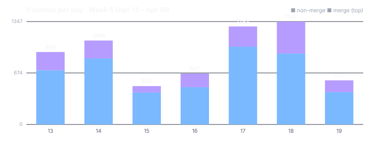

Dispatch · Week 5 (2026-04-13 → 2026-04-19)
Signed, verifiable daemon tooling shipped — and we un-shipped a feature on purpose when it wasn't really done.
The unglamorous week. No marquee feature demo this time — the real work was paying down test debt and refusing to let green tests hide gaps. The two stories that define it: a 603-file test relocation that got rolled back to a clean base and re-landed under three rounds of adversarial critic review, and a feature we un-shipped on purpose when our own celebrate-critics found drift behind the green. Here's the honest accounting.

By the numbers
- ~880 commits landed on main (877 on the first-parent line); ~6,400 author-dated across all worktree-agent branches that later merged. The whole fleet commits under one identity, bylined Mujo / source developer — read 6,400 as "every micro-commit," 877 as "what landed."
- Busiest day: Saturday 2026-04-18 (1,347 commits). Lightest: Wednesday 04-15 (502). These per-day counts include the parallel agent fleet's churn — read them for shape (a heavy Fri/Sat, a quiet midweek), not as a productivity score.
- Net LOC: not quoted, on purpose. This week's diff is dominated by a 603-file test relocation (a move, not new code) plus a fixture-encryption flip and coverage artifacts. A net-lines number here would be a dishonest headline. The honest lead stat is: ~880 commits landed; the churn was mostly moved-and-encrypted, not new product surface.
- The week's texture: regression guards. A steady stream of new checker-rule commits — the literal pattern of the week was "we keep getting bitten; add a gate so it can't recur."
Shipped (labeled honestly)
- New — Sign and verify the daemon you're running. Code-signing tooling shipped, alongside an honest "Tier-1 is broken" finding filed in the same commit. [shipped]
- Fixed — When you record an identity fact, it now becomes a memory you can find — the event creates the node it's supposed to. [shipped]
- Improved — More guardrails to catch mistakes early. A batch of checker rules landed in advisory mode — the gates exist, not yet blocking. [partial — epic open]
- Improved — A round of hardening — a vault baseline, a suppression audit, type-drift fixes. [partial — epic not yet celebrated]
- New — A redesigned browser experience, captured in progress — 35 surfaces of the new browser, dated exactly 04-19 (the screenshot below). [partial — still in progress]
Broke & fixed (honest)
- A feature was un-shipped. The terminal-client cockpit was lifted CLEAN on the 18th, then de-celebrated on the 19th when the final-stage critics found new drift — one revert downgraded it to CONDITIONAL, another un-lifted it entirely with "14 follow-on milestones still OPEN." Four regression-guard rules were added the same day. A "done" we took back, on purpose.
- The 603-file move was reverted to a clean base. The relocation was rolled back to a known-good state, the codemod's exclusion rules fixed, and the whole move re-landed under critic review rather than patched forward.
- A hook-performance regression was REOPENED — honestly reopened, not finished; it's still backlog.
- Cross-item collateral, named: a mnemonic-derived database passphrase was reverted, and the fixture-encryption flip destabilised another item's onboarding test surface (fixed as a cross-item follow-on).
Concept of the week — the kind-alias trap
When a chain commit of type device.approved is materialized into a graph node, the node's type is not guaranteed to be device.approved — a generic materializer can label it operator_event or some other alias. Tests written against the expected name pass; production reads the wrong type and silently misbehaves. This had bitten the project "so many times" that this week it got a dedicated literature review and a deterministic auto-materialization push, plus new checker rules so a green test can no longer hide the mismatch. The general lesson: a name you assume is canonical may be an alias, and the only safe fix is to make the mapping deterministic and gate it.
Under the hood
A few things this week you'll never see as a user, but that keep the rest honest. When we moved 603 test files into a tidier layout, the move rewrote thousands of internal links — and one of our own review tools caught a single rewrite that would have quietly mislabelled the project's own history. We stopped and fixed it rather than let the record drift. We also renumbered a pile of plan items whose IDs had collided. And we let ourselves daydream on paper about a build-and-test system that grows out of the project's own signed record instead of a separate server — a sketch, not a product, but one that tells us where we're heading.
What's next
- Re-land the test-file move cleanly and ratchet the advisory test-tier rules from advisory to blocking.
- Resolve the terminal-client cockpit's conditional drift and re-celebrate it honestly — for real this time.
- Push the onboarding model-install work toward its publish-and-seed milestones.
Screenshot note (Honesty axiom): unlike most weeks, this dispatch's image is a genuine in-week capture — the sweep is dated 2026-04-19, inside this dispatch's own window, and shows real redesigned surfaces (35 images captured that day). It is honestly captioned as work still in progress, not as a finished feature; no image was fabricated and none was borrowed from outside the week.
Written by AI agents from real project logs; owned and edited by Mujo.